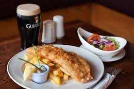

Workshops
There will be a number of workshops happening over the course of the weekend. There will be a limit of ten places per workshop. You can book by submitting your interest by email. Contact Us
Friday 6pm Gear placement in Ballyryan with John Healy
Dave Ayton, Wall of Fossils E5 Friday 6pm Multi-pitching skills with Paul Swail Saturday 12pm Upping your grade with Ricky Bell Saturday 12pm Bouldering in Doolin with Dave Ayton Saturday 3pm Red Pointing with Chloe Condron Saturday 3pm Facing your fear of falling with Filip Vilain Sunday 12pm New routing with Ellen Griffin Sunday 12pm Boulder Bashing with Michael Duffy Sunday 3pm Tour of the classic routes with Damien O'Sullivan Sunday 3pm Crack climbing with Sean Villanueva
VIDEO
More Info
Coffee Coffee Coffee
"Quirky, quick and quality! Best coffee I've had in years" Coffee Connioisseur
Meal Deal
There is plenty options to choose from for dining but the Doolin Hotel have kindly offered to do Fish and Chips for climbers attending the festival for a discounted rate of €10 with a pint included. This offer is available from Friday to Sunday night. Just use the enquiries email address on the Contact Us page to reserve a token for you.
Shuttle Bus
There will be a shuttle bus running from the crag to Doolin Friday, Saturday and Sunday from 6pm to ferry climbers to the village for an evening meal and for the talks. This is to ensure people can have a drink and not worry about driving or parking their car again as parking can be tight and queueing to park causes traffic jams. We really want to keep congestion by the crag to a minimum. The cost for the shuttle bus is €5 return and you can just pay the driver.